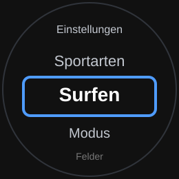
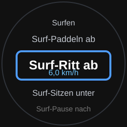
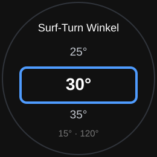
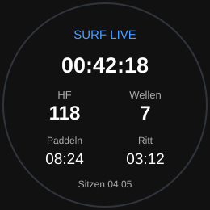
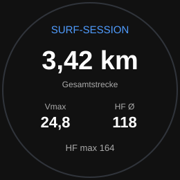

Mit HOCH/RUNTER Surfen auswählen. Die sichtbaren Einträge werden unter „Sportarten“ bestimmt.

„Surfen“ steht als eigener Menüzweig neben den gemeinsamen App-Einstellungen.
Separate Surf-Anleitung für Garmin Connect IQ
Anleitungsrevision V4 · SurfsApp 0.25.7 · Stand: 22.11.2026
Surfen ist eine eigene Sportart. Sie wird nicht mit Windsurfen, Wingen oder Kitesurfing vermischt.

Als Garmin-Sportart wird SPORT_SURFING geschrieben. Das Aktivitätskürzel lautet SU. Windsurfen bleibt WS, Wingen bleibt WF.
Das komplette Untermenü Surfen wird nur angezeigt, solange auf der Startseite Surfen ausgewählt ist. Beim Wechsel zu Windsurfen oder Wingen verschwindet es aus dem Hauptmenü.


Die Einstellungen in diesem Menü haben eigene Speicherwerte. Sie wirken ausschließlich bei sportChoice == 2, also beim ausgewählten Surfen. Die Windsurf-Werte glide, resume und idleKmh werden dabei nicht geändert.
| Einstellung | Werkseinstellung | Bereich | Bedeutung |
|---|---|---|---|
| Surf-Ritt ab | 6,0 km/h | 2,0–20,0 km/h; 0,5 | Ab dieser GPS-Geschwindigkeit zählt eine Sekunde als Rittphase. |
| Surf-Paddeln ab | 1,5 km/h | 0,5–10,0 km/h; 0,5 | Ab dieser Geschwindigkeit zählt die Zeit als Paddeln, sofern sie noch unter der Rittschwelle liegt. |
| Surf-Sitzen unter | 0,8 km/h | 0,0–5,0 km/h; 0,2 | Sehr langsame Bewegung darunter zählt als Sitzen/Warten. |
| Surf-Pause unter | 0,8 km/h | 0,0–5,0 km/h; 0,2 | Unter dieser Geschwindigkeit kann die SurfsApp-Autopause zählen. Dieser Wert ist unabhängig von „Surf-Sitzen unter“. |
| Surf-Pause nach | 20 s | 5–300 s; 5 | Wie lange Surfen unter der Paddel-/Rittlogik in der Surf-Autopause bleibt. |
| Surf-Wellen erkennen | An | An/Aus | Schaltet Live-Wellen, Turns und die dazugehörige Auswertung ein oder aus. |
| Surf-Visu | Aus | An/Aus | Zeichnet detaillierte Drehungs- und Board-Kursdaten auf. Damit können aufbereitete Turns und Slides ausgewertet werden. |
| Surf-Ritt Mindestdauer | 5 s | 2–30 s; 1 | Ein erkannter Ritt muss mindestens diese Dauer haben. |
| Surf-Ritt Mindeststrecke | 15 m | 5–100 m; 5 | Ein erkannter Ritt muss mindestens diese GPS-Strecke haben. |
| Surf-Turn Mindest-Drehrate | 8°/s | 3–30°/s; 1 | Der Kurs muss sich mindestens so schnell ändern, damit ein Turn-Schwung beginnt. |
| Surf-Turn Mindestwinkel | 30° | 15–120°; 5 | Mindestwinkel eines einzelnen Bottom-Turn-/Cutback-Schwungs. |
| Surf-GPS-Ausreißer | 45 km/h | 20–80 km/h; 5 | Höhere Einzelsekunden werden als GPS-/Messausreißer verworfen statt in Ritt und Höchsttempo zu fließen. |
Die Werte werden beim Öffnen oder Verlassen der Einstellungen geladen. Während einer laufenden Aufnahme gelten Änderungen mit Hinweis erst ab einer neuen Session, damit die Messfelder und die Auswertung einer Aufnahme zusammenpassen.




Unter Surfen → Surf-Anzeige lässt sich jede Seite einzeln ein-/ausschalten. Diese Einstellung gilt nur für die Surf-Sportart und verändert keine Windsurf- oder Wingen-Seiten.
Beim Surf-Modus ersetzt diese Reihenfolge die bisherigen Seitenfolgepunkte. Es gibt keine Windsurf-Maxima-Seite, keine Downwind-Seite, keine Loop-Seite, keine Jump-Seite und keine Wellen/Windsurf-Listen im Surf-Modus.
| Seite | Oberer Wert | Weitere Werte |
|---|---|---|
| SURF LIVE | Aktive bzw. aufgezeichnete Dauer | HF-Durchschnitt, erkannte Wellen, Paddelzeit, Rittzeit, Sitzzeit |
| WELLEN | Anzahl erkannter Wellen | Längste Rittdauer, bester Durchschnitt, längste Strecke |
| TURNS | Anzahl erkannter Turnpaare | Maximum je Welle, Slide-Anzahl, Slide-Zeit und Slide-Strecke |
| SURF-SESSION | Gesamtstrecke | Vmax, HF-Durchschnitt, HF-Maximum |
Surf Live hat das Schrift-/Platzschema der Garmin-Hauptansicht: große aktive Zeit oben, Paddeln und Ritt darüber, Wellen und Sitzen darunter sowie den grafischen HF-Zonenbogen am unteren Rand. Zeiten werden nach Bedarf erweitert; eine neue Zeit beginnt mit „1 s“, nicht mit „00:00:00“. In der Pause wechselt die große obere Zeit mit der Uhrzeit. Alle Surf-Seiten verwenden dieselben festen Schriftklassen und runden Abstände.

| Geschwindigkeit | Phase | Logik |
|---|---|---|
| Unter Surf-Sitzen unter | Sitzen/Warten | Keine Fahrt, kein Paddeln und kein Ritt. |
| Zwischen Paddeln ab und Ritt ab | Paddeln | Bewegung langsam genug für Paddeln, schnell genug für eine erkennbare Fahrt. |
| Ab Surf-Ritt ab | Ritt | Geschwindigkeit wird der Ritt-/Gleitphase zugerechnet. |
Das System prüft in dieser Reihenfolge: erst Ritt, dann Paddeln, dann Sitzen. Die Werte werden aus der Sekunden-GPS-Geschwindigkeit berechnet. Eine Position mit niedriger GPS-Qualität wird nicht als neue Surf-Geschwindigkeit übernommen; eine gültige Sekunde ersetzt keinen kurzen GPS-Ausfall mit dem alten Tempo.
Die bestehende Kursauswertung dient als Basis, ist aber mit den Surf-Grenzen konfiguriert:
Ein Ritt muss zusätzlich alle Surf-Grenzen erfüllen:
| Prüfung | Regel |
|---|---|
| Dauer | Mindestens „Surf-Ritt Mindestdauer“, Werkseinstellung 5 s. |
| Strecke | Mindestens „Surf-Ritt Mindeststrecke“, Werkseinstellung 15 m. |
| Turn-Winkel | Bottom Turn und Cutback jeweils mindestens 30°. |
| Drehrate | Mindestens 8°/s, Werkseinstellung. |
| GPS-Geschwindigkeit | Nirgends über der eingestellten Surf-GPS-Ausreißer-Grenze von 45 km/h. |
| Daten plausibel | GPS-Geschwindigkeit und Strecken-/Zeitmessung dürfen nicht unplausibel auseinanderliegen. |
Die Engregeln sind eine Schutzlogik gegen Fahrgeräusche und GPS-Sprünge. Ein Turn kann verworfen werden, ohne den ganzen Ritt automatisch zu löschen. Der Ritt bleibt erhalten, wenn mindestens ein gültiges Turn-Paar übrig bleibt.
Live gezählte Wellen und Turns sind vorläufige Anzeigewerte. Die endgültige Auswertung nach dem Speichern kann geringere bestätigte Werte liefern.
Vor dem Start werden die aktivierten Surf-Grenzen in der Aufnahme festgelegt:
Die Aufnahme wird in Garmin Connect als Surf-Aktivität gespeichert. Das Kürzel SU steht im Aktivitätsnamen. Die Sekundendaten enthalten Geschwindigkeit, Strecke, Herzfrequenz, Position, Kurs und, bei aktivem Surf-Visu, Drehungsdaten.
Nach dem Speichern zeigt die Uhr keine Windsurf-/Loop-Auswertung als Standard. Die Surf-Auswertung ist auf vier Bildschirme beschränkt:
Im Speicher der Uhr bekommt die Surf-Summe einen eigenen Schlüssel su. Windsurfen bleibt ws, Wingen bleibt wf. Damit werden Surf-Sessions nicht in die Windsurf-Summen eingerechnet.
| Situation | Empfehlung |
|---|---|
| Weicheboard / viele Paddelpausen | Paddeln 1,0–2,0 km/h, Ritt 5–7 km/h, Sitzen 0,8 km/h. |
| Kurze Wellen / kurze Abschnitte | Mindestdauer 3–5 s und Mindeststrecke 10–15 m. |
| Viele feine Kurswechsel | Drehrate 8–12°/s und Mindestwinkel 25–35°. |
| Raue Wasseroberfläche | Surf-GPS-Ausreißer auf 45–55 km/h erhöhen und höhere Mindeststrecke prüfen. |
| Erste Tests | Surf-Wellen erkennen An, Surf-Visu zunächst Aus, Ritt 5 s/15 m unverändert lassen. |
| Turns und Slides auswerten | Surf-Visu erst nach einem echten Surf-Test einschalten. Damit werden Drehungs-/Board-Kursdaten aufgezeichnet. |
Die Werkseinstellungen sind absichtlich konservativ: kein zu niedriger Turnwinkel, kein zu langer Zwang zum Turn und keine Windsurf-Gleitschwelle als Surf-Grenze.
| Merkmal | Windsurfen | Surfen |
|---|---|---|
| Sportwahl | SPORT_WINDSURFING / WS | SPORT_SURFING / SU |
| Gleitschwelle | glide, Standard 11 km/h | surfRide, Standard 6 km/h |
| Fahrt ab | resume, Standard 5,5 km/h | surfPaddle, Standard 1,5 km/h |
| Surf-Pause unter/nach | surfPauseKmh, surfPauseSec | Surf-Pause unter, Surf-Pause nach |
| Wellen | Windsurf-Bestimmung mit Boardkurs, Bottom Turn und Cutback | Surf-Modus mit eigenen Mindestdauer-, Strecken-, Turn- und GPS-Grenzen |
| Loops/Jumps | Vorhandene Modi | Nicht verwendet |
| Wingen-Lernphase | Nur beim Wingen | Nicht verwendet |
Surfen und Windsurfen sind getrennte Modi. Diese Anleitung beschreibt den aktuellen Stand der Uhr-Implementierung 0.25.6. Die fachliche Surf-Erkennung bleibt ein Fahrzeug für echte Wasserdaten und muss an Surf-Sessions weiter kalibriert werden.